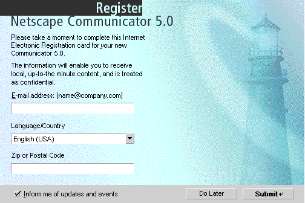
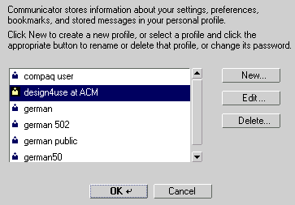

| Communicator Seamonkey |
UI Specification
|
| User Data Management |
Last
Modification:
|
| Author
German W. Bauer Initial Creation Date: 08 Mar 1999 |
Status: implementable specification awaiting FE and PM review. new version features more holistic view on user data management in general and incorporates new integrated profile manager. New: Proposing high-level menu to consolidate all user management functions. |
|||||||||||||
|
Quick Index:
|
||||||||||||||
What's related:
Design Overview |
Feature Team:
|
|||||||||||||
Older spec, will be updated |
Summary/Overview
The User Data Mangement UE is a new feature in Seamonkey which will help end-users
manage their personal data stored on Netcenter as well as on their local machine
Goals for our end users
- Give users an easy way to see and manage personal data is stored on their computers
- Generally simple end-user (no-) interface, things 'should do the right thing automatically' when used first. Adding many screens will negatively impact acceptance of technology.
Target Audience
The target user for this feature are Communicator Seamonkey users as described in the Seamonkey PRD.
User Tasks
Fundamental Tasks Intermediate Tasks Advanced Tasks Switch Profiles
Fill forms with personal user data
- Manage Profiles
- Edit
- Change Password
- Delete
- Add
- Change/Update personal data (e.g. when user has new address)
- Turn off automatic filling out of forms
- Lock personal data (so next use would ask for password again)
Clear all data stored on computer aka the red button (e.g. when user cannot remember password) Manage QuickFill Data Manage Single Signons Manage Cookies stored
Design Cheat
sheet
Design Philosophy
By giving users one central access point to managing their personal data, profile and regsitration needs for both the client and Netcenter users do not have to 'hunt' for places to manage this data.
In addition this will be seamless access point whether
Design Details
Initial Product Registration

Purpose
Having this minimal data set about the user will help Netscape provide a more personalized experience for the Sidebar content, My Netscape and Netcenter mail services. By keeping the data captured minimal we insure low annoyance and low privacy scare factors.
Profile Management

Purpose
The profile management section in the UI makes provides an easy way for multiple users to share a single machine without revealing personal data or disturbing the prefrences and settings of another user. New to Seamonkey is the capability of being able to switch to and manage profiles from within the Communicator environment. The will make profiles more easily discoverable and less cumbersome to use for the end-user. In previous versions users had to exit the Communicator environment, then do their profile tasks and then re-enter Communicator. The management dialog itself will look much like 4.x.
Single Signon
Purpose
The Single signon is a new feature in Seamonkey which will help end-users users with not having to remember different password for multiple sites that require authentication, but use one master key that lets them access passwords stored in their profile.
How single signon works
This feature will require very little user intervention to work. If the feature is enabled (users can turn it off, see below), Communicator will detect login dialogs that authenticate users for a given site/domain. The system record the passwords and logins on a per site basis. The next time the site is encountered the system will fill in the login and password automatically. Upon using this or another personal data feature the first time, the user will be asked for his or her profile password. For advanced users this feature can be selectively turned off for particular sites/domains via a dialog that lists the stored domains grouped with the login.
QuickFill
Purpose
The QuickFill is a new feature in Seamonkey which will help end-users users with the repetitive task of filling out forms. The technology on the client side behind this is described in Steve's algorithms document.
How Filling a form will work
In order to prevent spoofing in forms (like zero-length fields that would get automatically filled in without the user ever seeing it) as well as letting users select from multiple available values, the system will supply a 'preview' of the data to be filled in.
Notes:
Since the field schema names are sometimes not very descriptive we may have to supply 'pretty names' when displaying them in the preview.
Some users may want to do "the green button like on copier" thing, i.e. not being bothered by a preview, that is they want to go ahead and have the form filled anyway, so we may have to supply a 'do not show this again' checkbox in the preview.
Designs for Fill Preview
[add img here]
Fill preview is shown as a dialog on top of the form currently being filled out.
Elements that were originally Textfields on the form are shown as text field with a small popup button attached to it, with the most likely fill-in shown in the text field, and with other choices being listed once the popup menu is opened. Users can override the value in the text field with a new value which gets added to the user's values database..
Elements that were originally select popups or lists on the form will be shown as select popups with the choices filled in that the form provided and the choice selected that matches one of the entries in the user database if there is a match.
Both types of elements should show the field name from the mapped schema such as name.first, to provide at some explanation of what the data is used for.
Accessing QuikFill
Via toolbar button
positioning it on the main
navigator toolbar

the current plan is that this button appear to the right
of the url field
We will disable the button when not in use.
QuickFill management functions
Password Access dialog to personal data
This will be invoked every time users want to access personal data in the QuickFill (Question: do we let users set this to remember login throughout one session). This dialog occurs when:
- they invoke form fill
- they need to manage personal data stored on the computer
- change their login/password
Manage Personal Data dialog
Designed to let users inspect and change personal data stored on their computer
The above is a rough mockup based on HTML 3.2, we can make it better looking later using XUL (See illustration below)

Management of Cookies
Purpose
- Viewing stored cookies
- Removing stored cookies
- Viewing stored site information (whether user has allowed them to set cookies)
- Control over which sites will be able to set cookies
- Removing stored information about sites
Cookies that are stored on the user's machine can now be managed by a single, separate window, that lets users view a) all cookies stored and their properties as well as b) the user set preferences with regards to accpeting cookies from specific sites. We are proposing a design with two list views, one for stored site information indicating their ability to set cookies and another to actually see all the cookies stored and their properties/contents. The design below shows a 2 -page design that can toggle between viewing sites and cookies. There's a rough HTML prototype based on Nav 4.5 which you can click here to see.
Other UE Elements
Menus
Design Philosophy
Integrating the profiles manager into the application will have a profound impact on promoting the use of profiles for the next generation client.
Basically, by not having to launch an extra application it is now much easier to add seperate user profiles, such as for different family members.
By having a access point design centered around the user we will truly give meaning to personalizing the next client and tayloring it around the user's customizations. Also there is one place to manage all the user's data stored on the computer and on Netcenter, so that privacy sensitive users will have easily accessible control over what data gets stored about them.
Thus we are proposing a top level menu dedicated to managing the user's data. The exact location of this menu is still to be determined, the currently favored option is to include the menu on the far right side of the screen. There may be an issue with the Win32 and Linux platforms with regards to such positioning. There are several suggestions what to call such a menu, the currently favored option is to use the user's profile or real name. Other suggestions included:
- User Data
- Profile(s)
- User(s)
- The image of a person's head
Menu Design
Context Menus
None planned at this point
Preferences
In trying to keep things simple we
are hoping have all management of personal data accessible via this same entry
point rather than a hidden preferences panel
Error Messages and Dialogs
(shows some of the the major new alerts)
User Choices Switch Profile "Navigator will restart automiatically after switching profiles. Are you sure you want to switch to profile "Username"? Yes, No Verify access to profile at launch or before switching "Please enter your password to access to use profile 'username'" Password Field, OK, Cancel Verify access to personal data first time during session "Please enter your password to access personal data" Password Field, OK, Cancel No password yet at time of accessing personal data Assigning a password is recommended to protect your personal data. Add a password now or leave blank to not assign a password Password Field, retype field, OK, Cancel Lock personal data (enabled only if password available and password was used already once during session) Locking will protect your personal data from access while you're away from your computer. Navigator will ask you for your password next time you access your personal data. Press OK to lock your personal data now. OK, Cancel
Open Issues
- We can provide a more generalized way to key-navigate to 'the next empty' form text field.
- When we reg the product should we ask for password for personal data? If we don't we should probably encourage them to use a password (if they do not have one yet) the first time they use a feature like QuickFill or Single Signon.
Archived Documents
Examples of special formatting:
Revisions
Rev 1: first stab, based on UI design docs on PM feedback
Rev 2: complete revamp based on the fact that we are now focusing on a client-only form fill functionality
Rev 3: This revision features integration with profile manager and other holistic data management
Special Notes
|